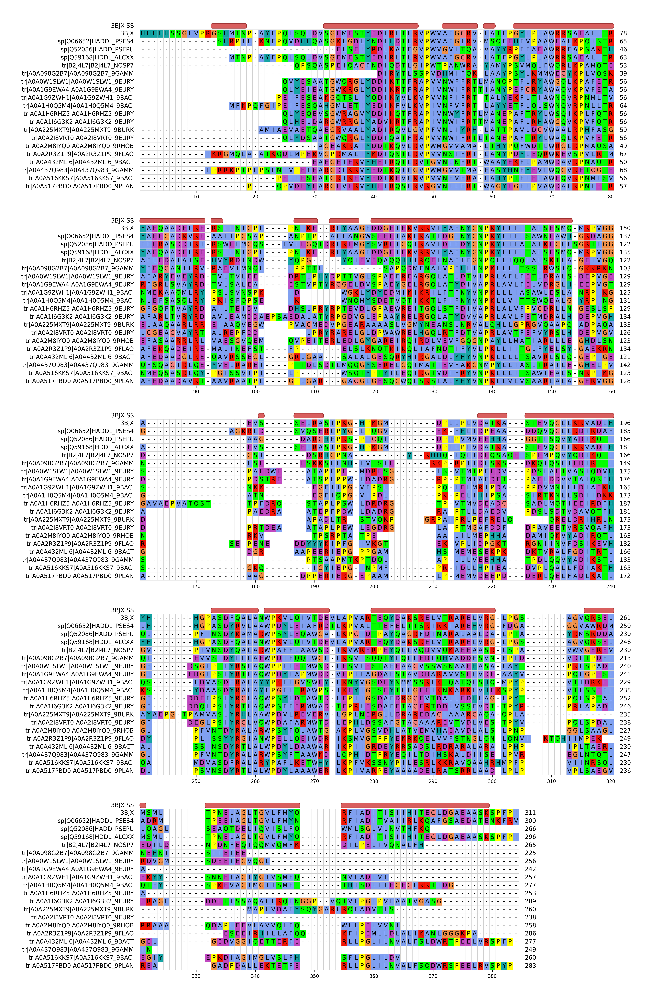

flowchart LR
A[DehI family<br>core MSA] --> B[Map 3BJX<br>structural boundary]
B --> C[N-terminal MSA<br>residues 1–129]
B --> D[C-terminal MSA<br>residues 162–296]
B -.-> E[Exclude linker<br>residues 130–161]
C --> F[N-terminal HHM]
D --> G[C-terminal HHM]
F --> H[HHalign<br>profile–profile comparison]
G --> H
Internal duplication in the DehI dehalogenase family
A 3BJX-guided sequence and profile-HMM analysis
Summary
The configuration-inverting 2-haloacid dehalogenase DehI has two structurally similar regions of approximately 130 amino acids. This analysis tests whether the two regions retain detectable sequence homology consistent with an ancient tandem duplication and fusion.
The N- and C-terminal regions were defined using the experimentally determined DehI structure 3BJX, extracted from a 69-sequence family alignment, converted into separate HH-suite profile hidden Markov models, and compared using HHalign. The profiles align over nearly their entire lengths with 99.54% HHalign probability, an E-value of 2.9 × 10-23, and 17% direct sequence identity. The combination of low identity, strong profile-profile support, and broad alignment coverage is consistent with remote homology between the two DehI repeats.
ImportantPrincipal result
The N- and C-terminal profiles align across 108 columns: 88% of the N-terminal model and 96% of the C-terminal model. This is a domain-scale match rather than a short conserved motif.
Biological question
DehI from Pseudomonas putida PP3 is an unusual α-helical dehalogenase with a deep Stevedore knot. Its monomer contains two regions with closely similar structures but low pairwise sequence identity. The original structural study described two approximately 130-residue domains with about 16% sequence identity (PDB 3BJX; DOI: 10.1016/j.jmb.2008.02.035). A later topology analysis interpreted these regions as likely products of tandem sequence duplication and described the proline-rich arc connecting them (King et al., 2010).
The specific question addressed here is:
Does a profile-profile comparison of the DehI N- and C-terminal families recover statistically strong, domain-scale sequence homology after the linker is excluded?
Analysis design
The workflow deliberately separates computation from presentation. Alignment splitting and HH-suite profile construction are performed by version-controlled scripts. This document reads the resulting files; it does not rerun HH-suite during website rendering.
Family alignment and structural reference
The input was the 69-sequence aligned FASTA file dehi_core_msa.fasta. The first record is the 3BJX chain-A reference. Its aligned sequence contains a 15-residue recombinant N-terminal expression tag followed by native DehI residues 1–296.
| Property | Value |
|---|---|
| Family sequences | 69 |
| Alignment columns | 384 |
| 3BJX aligned residues | 311 |
| 3BJX expression-tag residues | 15 |
| 3BJX native residues | 296 |
Secondary-structure context
The deposited HELIX records from 3BJX were mapped through the gaps in the 3BJX alignment row. Red rounded bars denote helices. The figure shows the first 20 family members for legibility; the domain splitting and HHM construction use all 69 sequences.

Defining and extracting the repeats
The last long helix of the N-terminal repeat ends at 3BJX residue 129. A proline-rich region occupies residues 130–161, and the next repeat begins at residue 162 with a short 310 helix followed by the first long C-terminal helix. The linker is therefore 32 residues by these structure-defined bounds, corresponding to the approximately 30-residue linker described informally.
| Region | Native 3BJX residues | Treatment |
|---|---|---|
| N-terminal repeat | 1–129 | Retained |
| Proline-rich linker | 130–161 | Excluded |
| C-terminal repeat | 162–296 | Retained |
The boundaries were mapped from native 3BJX residue numbers to MSA columns. The same columns were then extracted from every family member. All-gap columns were removed independently from each resulting alignment. The procedure is implemented in split_dehi_msa.py.
| Region | 3BJX residues | Source MSA columns | Output columns | Sequences |
|---|---|---|---|---|
| N | 1–129 | 16–154 | 139 | 69 |
| Linker excluded | 130–161 | 155–217 | — | — |
| C | 162–296 | 218–384 | 167 | 69 |
The N-terminal output has 139 aligned columns and the C-terminal output has 167. The ungapped 3BJX fragments contain 129 and 135 residues, respectively. All 69 input records are represented in both outputs.
HH-suite profile construction
HH-suite was chosen because HHalign directly compares profile HMMs and is designed to detect remote protein homology through alignment-to-alignment or HMM-to-HMM comparison (HH-suite documentation; Steinegger et al., 2019).
Each split FASTA alignment was converted to A3M format. A column was designated as a match state when fewer than 50% of sequences contained a gap (-M 50). Columns not meeting this condition were represented as insert states. HHmake then applied its standard sequence filtering and weighting before constructing each HHM.
reformat.pl fas a3m results/dehi_N_terminal_msa.fasta \
results/dehi_N_terminal.a3m -M 50
reformat.pl fas a3m results/dehi_C_terminal_msa.fasta \
results/dehi_C_terminal.a3m -M 50
hhmake -i results/dehi_N_terminal.a3m \
-o results/dehi_N_terminal.hhm -name DehI_N_terminal
hhmake -i results/dehi_C_terminal.a3m \
-o results/dehi_C_terminal.hhm -name DehI_C_terminal| Profile | Match states | Sequences retained | Effective sequences |
|---|---|---|---|
| DehI N-terminal | 123 | 68/69 | 5.5 |
| DehI C-terminal | 113 | 68/69 | 6.0 |
HHmake retained 68 of 69 sequences in each model after its default redundancy and quality filters. The effective sequence counts (Neff) of 5.5 and 6.0 are much smaller than the raw sequence count because related sequences do not contribute as independent observations.
N-terminal versus C-terminal HHalign result
The two precomputed HHMs were compared directly:
hhalign \
-i results/dehi_N_terminal.hhm \
-t results/dehi_C_terminal.hhm \
-o results/dehi_N_vs_C.hhr \
-Oa3m results/dehi_N_vs_C.a3m \
-atab results/dehi_N_vs_C.tsv| Metric | Value |
|---|---|
| HHalign probability | 99.54% |
| E-value | 2.9 × 10-23 |
| Profile score | 124.39 bits |
| Aligned columns | 108 |
| Direct identity | 17% |
| Profile similarity | 0.123 |
| Sum of posterior probabilities | 94.6 |
| N-profile coverage | 87.8% |
| C-profile coverage | 95.6% |
The alignment spans N-profile match states 5–113 and C-profile match states 2–112. It therefore covers most of both models rather than selecting a small highly conserved segment. The 17% direct identity lies in the range where pairwise sequence comparison alone is generally difficult, while the profile score remains strong because residue preferences and gap patterns are aggregated across the family.
Profile-profile alignment
The following is the consensus and 3BJX portion of the HHalign output. Digits in the Confidence lines are posterior alignment confidence on a 0–9 scale.
Q 3BJX 12 QLDVSGEMESTYEDIRLTLRVPWVAFGCRVLATFPGYLPLAWRR.SAEALITRYAEQAADELRERSLLNIGPLPNL-K-E 88 (129)
Q Consensus 5 e~eA~g~~~~vY~DIk~tLrVP~Vn~ifRtlA~yp~fl~~~W~~.~rP~~~T~~fe~aA~~lR~~~~~~~~~~~~~-~-~ 81 (123)
+.++.+.++++|+|||+++|.|.||..+|+||+||+||..+|+. +||..+|.+|++++++++..+...+...+-+ . .
T Consensus 2 ~~~~~~~~~~l~~dI~~~h~~~~v~SdYR~LA~wP~~L~~~W~~.LkP~i~s~~y~~~~~~l~~~A~~~v~~lP~~v~l~ 80 (113)
T 3BJX 2 ATKASTEVQGLLKRVADLHYHHGPASDFQALANWPKVLQIVTDEvLAPVARTEQYDAKSRELVTRARELVRGLPGSAGVQ 81 (135)
Confidence 56889999999999999999999999999999999999999999 9999999999999999999888877765332 1 1
Q 3BJX 89 --RLYAAGFDDGEIEKVRRVLYAFNYGNPKYLL 119 (129)
Q Consensus 82 ~-~~~~~~~~~~~~~~ir~~l~~f~~vnPklLl 113 (123)
. .+.+.+ ++.++++|.+.+..|...-|-++|
T Consensus 81 ~~~L~~~~-~~~~i~~i~~l~~~F~~~lp~Lil 112 (113)
T 3BJX 82 RSELMSML-TPNELAGLTGVLFMYQRFIADITI 113 (135)
Confidence 1 555555 899999999999999988877654Interpretation
Three features make this result supportive of internal homology:
- High profile probability. HHalign assigns a 99.54% probability to the N/C relationship.
- Domain-scale coverage. The 108 aligned columns cover 88% of the N model and 96% of the C model.
- Remote rather than trivial similarity. Direct identity is only 17%, yet conserved residue patterns remain detectable when information is combined across 69 family members.
Together with the near-identical structural folds reported for 3BJX, this is consistent with the proposal that an ancestral domain duplicated in tandem and the two copies subsequently diverged while remaining fused in DehI.
NoteWhat the result does not prove
HHalign measures compatibility between two profile models. It does not by itself date the duplication, identify the ancestral free-standing family, or exclude every alternative evolutionary scenario. Structural correspondence, taxonomic distribution, conserved catalytic residues, and comparisons with external families provide independent evidence.
Statistical qualification
Only one template HMM was searched (Searched_HMMs 1). Consequently, the reported E-value and P-value are identical (2.9 × 10^-23^); this is not an E-value corrected for a large profile database. The probability, score, and especially the broad alignment coverage remain directly informative for this pre-specified N-versus-C comparison.
Secondary structure was not included in the HHalign score (SS = 0, reported as missing dssp). This makes the profile match a sequence-derived result rather than one driven by the known structural similarity.
Robustness checks and next analyses
The following tests would strengthen the evolutionary interpretation:
- Rebuild both profiles after removing 3BJX and repeat the comparison, ensuring that the structural reference is not driving the result.
- Repeat profile construction with match-state thresholds of 30%, 50%, and 70% gaps and compare the aligned cores.
- Construct independent CMD and AhpD HHMs, then compare DehI-N and DehI-C to each external family.
- Search both DehI profiles against the same curated HH-suite database and test whether their strongest domain-level matches overlap.
- Map conserved aligned profile positions back onto the 3BJX structure and determine whether they occupy corresponding structural environments.
The four most direct cross-family comparisons are:
| Query profile | Template profile | Question |
|---|---|---|
| DehI-N | CMD | Does the N repeat resemble a free-standing CMD-like fold? |
| DehI-C | CMD | Does the C repeat show the same relationship? |
| DehI-N | AhpD | Does the N repeat resemble the AhpD family? |
| DehI-C | AhpD | Does the C repeat show the same relationship? |
Agreement across both halves and an external family would provide stronger evidence about the ancestry of the duplicated unit than the internal N/C result alone.
Reproducibility and downloads
The report uses precomputed HH-suite output so that the website can be rendered without installing native bioinformatics software. The Python dependencies are managed by uv; HH-suite 3 is required only when regenerating the profiles.
Scripts
split_dehi_msa.py— map the 3BJX boundaries through the family MSA and extract both repeats.build_dehi_hhsuite_profiles.sh— convert the alignments to A3M, construct both HHMs, and run HHalign.
Alignments and sequences
Profiles and comparison output
- N-terminal HHM
- C-terminal HHM
- HHalign report
- HHalign pairwise A3M
- HHalign per-column table
- Domain-splitting report
To regenerate the derived files locally:
uv run python split_dehi_msa.py
./build_dehi_hhsuite_profiles.sh
quarto render report.qmd